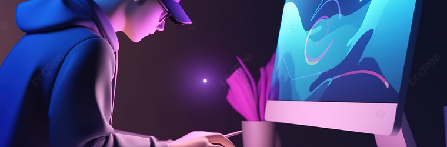

Photo manipulation
What is Photograph manipulation?
Photographic manipulation refers to the altering of specific elements in photographs. There are several different techniques and types of software that can be used to alter photographs, such as simple edits like cropping and light adjustments, to more substantial changes such as adding and removing objects and changing backgrounds. This editing can be increadibly useful for artistic purposes.
Photo manipulation is incredibly useful in photographic art, as it provides artists with the opportunity to create a surreal scene that breaks all laws of reality, while still having a realistic look. Photographic manipulation also allows users to enhance photos through editing certain aspects of a photo. Photo manipulation is a very important tool used for artistic purposes and is very helpful form of technology. An example of photo manipulation used in Art is evident in the image below, as this photo has been edited to make it appear like the ground is curving into a pathway. This photo still looks realistic as the lady standing in the middle of the circle is an image.

Some existing applications that use photo manipulation include:
- Pixlr
- Snapseed
- Google Photos
- Affinity Photo
- GIMP
- Fotor
- VSCO
- And several other applications
While there is an almost endless list of applications with the ability to manipulate photos and all of them are very useful, the most used app for photo manipulation is Adobe Photoshop. Adobe Photoshop allows users to edit photos through the manipulation of pixels in an image. Photoshop, and other applications, use technology to change the position and/or style of specific pixels to change the view of a photograph. Adobe Photo shop is a very popular application used for photographic manipulation as it offers a wide range of tools and shortcuts that make photo manipulation easier for users.
Some of the features and tools Adobe Photoshop offers are:
- The Sponge tool- Which allows you to absorb and release the colour from a certain image.
- The blur tool- Which allows you to make the pixels in an image less distinct through blurring them.
- The Clone Stamp- Which lets you copy and paste pixels of an image from one place to another.
- The Sharpen tool -Which enables you to make the pixels of an image more distinct.
- The brush tool -Which can be used for several purposes including painting, retouching, and compositing images.
- And several other tools used to change the layout, view and/or style of an image.
.jpeg)
Ethics of photograph manipulation
Although editing photos is an very useful tool for artistic purposes, there are ethical concerns of photographic manipulation, including the expectations of appearances it may set. Manipulating photos is unethically used, mainly by fashion magazines and other modelling agencies, by editing images of models and people to make them look 'better' consequently creating stereotypes in appearances. This can have a detrimental impact on both individuals and society as it creates impossible beauty standards that individuals believe they must meet.
Editing should maintain the integrity of the photographic images’ content and context. (Bostwick, n.d.) Narrative Bostwick (n.d.)
Air brushing skin
One example of the unethical nature of Photo manipulation includes the airbrushing of models in magazines. As shown in the photo above, this magazine has used the airbrush tool in order to make the skin of this model look smoother. This form of photo manipulation creates the ethical issue of redefining beauty into something impossible. This can have an impact on society, through damaging the mental health of viewers. The viewers of this magazine will see the smooth skin of this model and believe that they also need to have skin this smooth, when the truth is that the photo was manipulated to make the skin of the model seem flawless.

Legal issues of photo manipulation
Through altering images, the perspectives of the photo can be changed which results in legal issues. By adding and removing certain parts of a photo, the message can be changed entirely as key information depicting the main purpose of the image may be removed, resulting in a legal issue as it could mislead viewers into believing false information like the editing of advertisements, as the edited photo may not depict the reality of a product. It can also be seen in articles, as journalists may edit a photo and change the overall message of the photo to manipulate the perception viewers will have of this photo.
Do not manipulate images...in any way that can mislead viewers or misrepresent subjects.
An example of Companies using photo manipulation in their advertisements is McDonald's editing photos of their burgers to make them seem more appealing to customers. McDonalds had edited their images through airbrushing the images to make it seem more perfect, editing the colours of the food to make it seem more appealing and also other different edits like expanding the size of the beef to make the burgers seem more full. The editing of the meat to appear thicker misleads consumers into believing that McDonald's offers serving sizes with a large amount of meat, when this photo was actually manipulated to look like this. The editing of the colours of the bun in this burger also makes the quality of the burger seem better and makes it look more delicious. After seeing this image, consumers will want to buy this burger as they believe that all burgers in McDonald's will look like this. This is a legal concern, as it breaches the law in the ACCC of False and Misleading claims in advertising.

Some recommendations for ethical uses with photo manipulation
While these ethical and legal concerns do exist, there are still ways to use photo manipulation in ethical ways. Using photographic manipulation on people to make them look 'better' is an unethical way to manipulate their photos, however changing the colour of their shirt is an ethical way to manipulate the photo as it does not create beauty standards as it only changes the clothing of the person rather than the person. One recommendation to ensure this ethical use of photo manipulation would be to make sure that the people in a photo are not edited to change their appearance. You can also read the code of ethics for more information.
One way to ensure that you are using photo manipulation in a legal way would be to ensure you are aware of the laws and guidelines associated with photographic manipulation. If you wish to publish and article and are editing a photo to add to it, make sure you are not changing the meaning of the photo in a way that can manipulate viewers. Similarly, if a company wishes to edit the photo of one of their advertisements, they too should ensure that their photo accurately represents their product and that they are not misleading any consumers. More information regarding the legal requirements of photo editing can be found here.
Even individuals using photo manipulating software, can understand the ethical and legal issues associated with photographic manipulation and can understand the impact it can have on society. By knowing these issues, individuals can understand the impact associated with the immoral use of photographic manipulation and ensure the responsible use of photo manipulation.
References
Bostwick, D. (n.d.). Visual concerns. Pressbooks. Ecosystem recovery fund: The ESA's bushfire response. https://uark.pressbooks.pub/journalismethics/chapter/chapter-11/#:~:text=The%20National%20Press%20Photographers%20Association's,mislead%20viewers%20or%20misrepresent%20subjects.
Code of Ethics for Visual Journalists. (n.d.). NPPA https://nppa.org/resources/code-ethics
Duke, D. (2023, October 5). The ethical and legal considerations of influencer marketing and AI Photo-Editing Tools. Forbes. https://www.forbes.com/sites/forbesbusinesscouncil/2023/08/03/considerations-of-influencer-marketing-and-ai-photo-editing-tools/?sh=205168307152
Fotosolution. (2018, April 11). How to retouch and airbrush skin effetely in Photoshop. Medium. https://medium.com/@Sofia_Giang/how-to-retouch-and-airbrush-skin-effetely-in-photoshop-70b78d449a5a
Taylor, K., & Fierberg, E. (2018, January 25). McDonald’s left unedited versions of its food photos on its website — see the most shocking differences. Business Insider. https://www.businessinsider.com/mcdonalds-retouched-vs-unretouched-photos-2018-1
Unauthorised use of your image - Arts Law Centre of Australia. (2022, October 17). Arts Law Centre of Australia. https://www.artslaw.com.au/information-sheet/unauthorised-use-of-your-image/